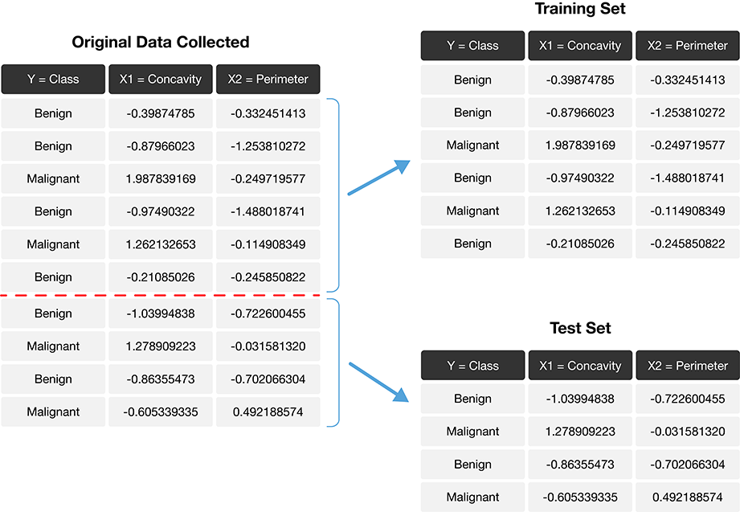

Classification II: evaluation & tuning
Session learning objectives
By the end of the session, learners will be able to do the following:
- Describe what training, validation, and test data sets are and how they are used in classification.
- Split data into training, validation, and test data sets.
- Describe what a random seed is and its importance in reproducible data analysis.
- Set the random seed in Python using the
numpy.random.seedfunction. - Describe and interpret accuracy, precision, recall, and confusion matrices.
Session learning objectives cont’d
By the end of the session, learners will be able to do the following:
- Evaluate classification accuracy, precision, and recall in Python using a test set, a single validation set, and cross-validation.
- Produce a confusion matrix in Python.
- Choose the number of neighbors in a K-nearest neighbors classifier by maximizing estimated cross-validation accuracy.
- Describe underfitting and overfitting, and relate it to the number of neighbors in K-nearest neighbors classification.
- Describe the advantages and disadvantages of the K-nearest neighbors classification algorithm.
Evaluating performance
Sometimes our classifier might make the wrong prediction.
A classifier does not need to be right 100% of the time to be useful, though we don’t want the classifier to make too many wrong predictions.
How do we measure how “good” our classifier is?
Data splitting
- The trick is to split the data into a training set and test set.
- Only the training set when building the classifier.
- To evaluate the performance of the classifier, we first set aside the labels from the test set, and then use the classifier to predict the labels in the test set.
- If our predictions match the actual labels for the observations in the test set, then we have some confidence that our classifier might also accurately predict the class labels for new observations without known class labels.
Splitting the data into training and testing sets
Prediction accuracy

Is knowing accuracy enough?
- Example accuracy calculation:
\[\mathrm{accuracy} = \frac{\mathrm{number \; of \; correct \; predictions}}{\mathrm{total \; number \; of \; predictions}} = \frac{58}{65} = 0.892\]
Prediction accuracy only tells us how often the classifier makes mistakes in general, but does not tell us anything about the kinds of mistakes the classifier makes.
The confusion matrix tells a more complete story.
Example confusion matrix for the breast cancer data:
| Predicted Malignant | Predicted Benign | |
|---|---|---|
| Actually Malignant | 1 | 3 |
| Actually Benign | 4 | 57 |
- True Positive: A malignant observation that was classified as malignant (top left).
- False Positive: A benign observation that was classified as malignant (bottom left).
- True Negative: A benign observation that was classified as benign (bottom right).
- False Negative: A malignant observation that was classified as benign (top right).
Precision & recall
- Precision quantifies how many of the positive predictions the classifier made were actually positive.
\[\mathrm{precision} = \frac{\mathrm{number \; of \; correct \; positive \; predictions}}{\mathrm{total \; number \; of \; positive \; predictions}}\]
- Recall quantifies how many of the positive observations in the test set were identified as positive.
\[\mathrm{recall} = \frac{\mathrm{number \; of \; correct \; positive \; predictions}}{\mathrm{total \; number \; of \; positive \; test \; set \; observations}}\]
Precision and recall for the breast cancer data set example
| Predicted Malignant | Predicted Benign | |
|---|---|---|
| Actually Malignant | 1 | 3 |
| Actually Benign | 4 | 57 |
\[\mathrm{precision} = \frac{1}{1+4} = 0.20, \quad \mathrm{recall} = \frac{1}{1+3} = 0.25\]
So even with an accuracy of 89%, the precision and recall of the classifier were both relatively low. For this data analysis context, recall is particularly important: if someone has a malignant tumor, we certainly want to identify it. A recall of just 25% would likely be unacceptable!
Randomness and seeds
Our data analyses will often involve the use of randomness
We use randomness any time we need to make a decision in our analysis that needs to be fair, unbiased, and not influenced by human input (e.g., splitting into training and test sets).
However, the use of randomness runs counter to one of the main tenets of good data analysis practice: reproducibility…
The trick is that in Python—and other programming languages—randomness is not actually random! Instead, Python uses a random number generator that produces a sequence of numbers that are completely determined by a seed value.
Once you set the seed value, everything after that point may look random, but is actually totally reproducible.
Setting the seed in Python
Let’s say we want to make a series object containing the integers from 0 to 9. And then we want to randomly pick 10 numbers from that list, but we want it to be reproducible.
Setting the seed in Python (cont’d)
Reminder of the list of numbers we just generated:
If we run the sample method again, we will get a fresh batch of 10 numbers that also look random.
Setting the seed in Python (cont’d)
Let’s regenerate original set of 10 random numbers by setting the seed to 1:
If we choose a different value for the seed—say, 4235—we obtain a different sequence of random numbers:
Back to the breast cancer data set example
Load packages and set seed:
Load the data and look at class distribution:
Setting normalize=True allows us to view the proportions.
Create the train / test split
Before fitting any models, or doing exploratory data analysis, it is critical that you split the data into training and test sets.
Typically, the training set is between 50% and 95% of the data, while the test set is the remaining 5% to 50%.
The
train_test_splitfunction fromscikit-learnhandles the procedure of splitting the data for us.Use
shuffle=Trueto remove the influence of order in the data set.Set the
stratifyparameter to be the response variable to ensure the same proportion of each class ends up in both the training and testing sets.
Splitting the breast cancer data set
- Split the data so 75% are in the training set, and 25% in the test set
- Data are shuffled
- Split is stratified on the
Classvariable
Checking the splits
Let’s look at the training and test splits (in practice you look at both)
We can see our class proportions were roughly preserved when we split the data.
Preprocessing with data splitting
Many machine learning models are sensitive to the scale of the predictors, and even if not, comparison of importance of features for prediction after fitting requires scaling.
When preprocessing the data (scaling is part of this), it is critical that we use only the training set in creating the mathematical function to do this.
If this is not done, we will get overly optimistic test accuracy, as our test data will have influenced our model.
After creating the preprocessing function, we can then apply it separately to both the training and test data sets.
Preprocessing with scikit-learn
scikit-learnhelps us handle this properly as long as we wrap our analysis steps in aPipeline.Specifically, we construct and prepare the preprocessor using
make_column_transformer, specifying the type of tranformation we want to apply, as well as which columns to apply it to:
Train the classifier
Now we can create our K-nearest neighbors classifier with only the training set.
For simplicity, we will just choose \(K\) = 3, and use only the concavity and smoothness predictors.
Predict the labels in the test set
Now that we have a K-nearest neighbors classifier object, we can use it to predict the class labels for our test set:
Evaluate performance
To evaluate the model, we will look at:
- accuracy
- precision
- recall
- confusion matrix
- compare to baseline model (majority classifier)
All of these together, will help us develop a fuller picture of how the model is performing, as opposed to only evaluating the model based on a single metric or table.
Accuracy
Precision
Recall
Confusion matrix
The Pandas
crosstabfunction takes two arguments: the actual labels first, then the predicted labels second.Note that
crosstaborders its columns alphabetically, but the positive label is stillMalignant, even if it is not in the top left corner as in the table shown earlier.
Critically analyze performance
Is 90% accuracy, a precision of 83% and a recall of 91% good enough?
To get a sense of scale, we often compare our model to a baseline model. In the case of classification, this would be the majority classifier (always guesses the majority class label from the training data).
For the breast cancer training data, the baseline classifier’s accuracy would be 63%
Critically analyze performance (cont’d)
So we do see that our model is doing a LOT better than the baseline, which is great, but considering our application domain is in cancer diagnosis, we still have a ways to go…
Analyzing model performance really depends on your application!
Tuning the classifier
Most predictive models in statistics and machine learning have parameters (a number you have to pick in advance that determines some aspect of how the model behaves).
For our working example, \(K\)-nearest neighbors classification algorithm, \(K\) is a parameter that we have to pick that determines how many neighbors participate in the class vote.
How do we choose \(K\), or any parameter for other models?
Data splitting!
Validation set
Cannot use the test set to choose the parameter!
But we can split the training set into two partitions, a traning set and a validation set.
For each parameter value we want to assess, we can fit on the training set, and evaluate on the validation set.
Then after we find the best value for our parameter, we can refit the model with the best parameter on the entire training set and then evaluate our model on the test set.
Validation set
Can we do better?
Depending on how we split the data into the training and validation sets, we might get a lucky split (or an unlucky one) that doesn’t give us a good estimate of the model’s true accuracy.
In many cases, we can do better by making many splits, and averaging the accuracy scores to get a better estimate.
We call this cross-validation.
Cross-validation with five folds

Cross-validation in scikit-learn
Use the
scikit-learncross_validatefunction.Need to specify:
- a modelling
Pipelineas theestimatorargument, - the number of folds as the
cvargument, - the training data predictors as the
Xargument - the labels as the
yarguments.
- a modelling
Note that the
cross_validatefunction handles stratifying the classes in each train and validate fold automatically.
Cross-validation in scikit-learn (cont’d)
Cross-validation in scikit-learn (cont’d)
Parameter value selection
Since cross-validation helps us evaluate the accuracy of our classifier, we can use cross-validation to calculate an accuracy for each value of our parameter, here \(K\), in a reasonable range.
Then we pick the value of \(K\) that gives us the best accuracy, and refit the model with our parameter on the training data, and then evaluate on the test data.
The
scikit-learnpackage collection provides built-in functionality, namedGridSearchCV, to automatically handle the details for us.
Parameter value selection
Parameter value selection
Now we use the fit method on the GridSearchCV object to begin the tuning process.
Parameter value selection
Visualize paramter value selection
Visualize paramter value selection
Best parameter value
We can also obtain the number of neighbours with the highest accuracy programmatically by accessing the best_params_ attribute of the fit GridSearchCV object.
Best parameter value
Do we use \(K\) = 36?
Generally, when selecting a parameters, we are looking for a value where:
- we get roughly optimal accuracy
- changing the value to a nearby one doesn’t change the accuracy too much
- the cost of training the model is not prohibitive
Best parameter value
Under/Overfitting
- What happens if we keep increasing the number of neighbors \(K\)?
- The cross-validation accuracy estimate actually starts to decrease!
Evaluating on the test set
Before we evaluate on the test set, we need to refit the model using the best parameter(s) on the entire training set
Luckily,
scikit-learndoes it for us automatically!To make predictions and assess the estimated accuracy of the best model on the test data, we can use the
scoreandpredictmethods of the fitGridSearchCVobject.
Evaluating on the test set
How well might our classifier do on unseen data?
To find out we can then pass those predictions to the precision, recall, and crosstab functions to assess the estimated precision and recall, and print a confusion matrix.
Accuracy
Precision
Recall
Confusion matrix
Summary

K-nearest neighbors classification algorithm
Strengths: K-nearest neighbors classification
- is a simple, intuitive algorithm,
- requires few assumptions about what the data must look like, and
- works for binary (two-class) and multi-class (more than 2 classes) classification problems.
Weaknesses: K-nearest neighbors classification
- becomes very slow as the training data gets larger,
- may not perform well with a large number of predictors, and
- may not perform well when classes are imbalanced.
Other classification algorithms

scikit-learn classification documentation: https://scikit-learn.org/stable/supervised_learning.html
Additional resources
- The Classification II: evaluation & tuning chapter of Data Science: A First Introduction (Python Edition) by Tiffany Timbers, Trevor Campbell, Melissa Lee, Joel Ostblom, Lindsey Heagy contains all the content presented here with a detailed narrative.
- The
scikit-learnwebsite is an excellent reference for more details on, and advanced usage of, the functions and packages in the past two chapters. Aside from that, it also offers many useful tutorials to get you started. - An Introduction to Statistical Learning provides a great next stop in the process of learning about classification. Chapter 4 discusses additional basic techniques for classification that we do not cover, such as logistic regression, linear discriminant analysis, and naive Bayes.
References
Evelyn Martin Lansdowne Beale, Maurice George Kendall, and David Mann. The discarding of variables in multivariate analysis. Biometrika, 54(3-4):357–366, 1967.
Norman Draper and Harry Smith. Applied Regression Analysis. Wiley, 1966.
M. Eforymson. Stepwise regression—a backward and forward look. In Eastern Regional Meetings of the Institute of Mathematical Statistics. 1966.
Ronald Hocking and R. N. Leslie. Selection of the best subset in regression analysis. Technometrics, 9(4):531–540, 1967.
Gareth James, Daniela Witten, Trevor Hastie, and Robert Tibshirani. An Introduction to Statistical Learning. Springer, 1st edition, 2013. URL: https://www.statlearning.com/.
Wes McKinney. Python for data analysis: Data wrangling with Pandas, NumPy, and IPython. ” O’Reilly Media, Inc.”, 2012.
William Nick Street, William Wolberg, and Olvi Mangasarian. Nuclear feature extraction for breast tumor diagnosis. In International Symposium on Electronic Imaging: Science and Technology. 1993.